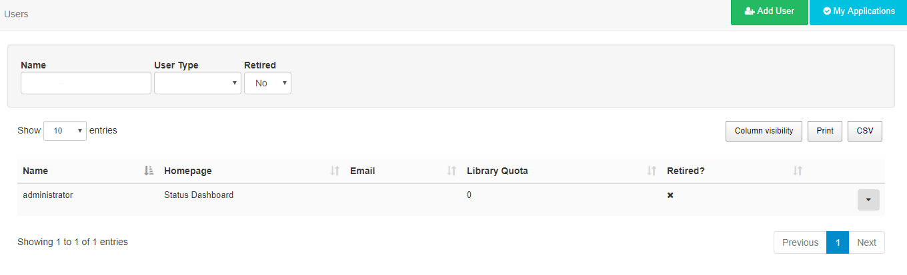
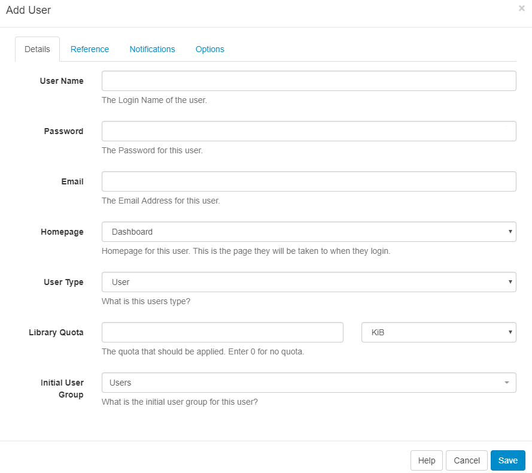
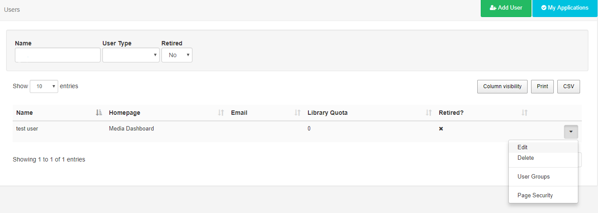
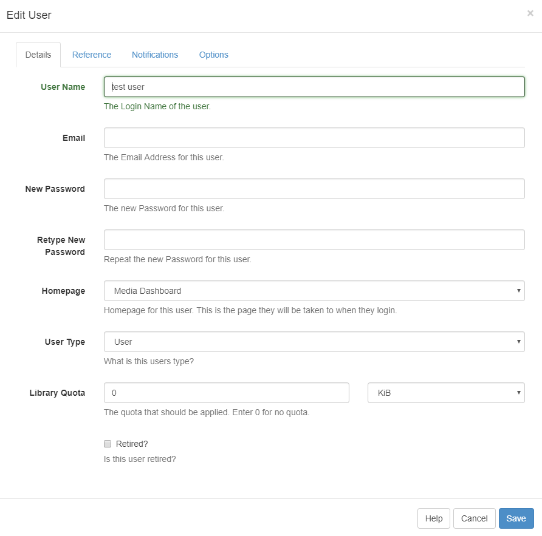
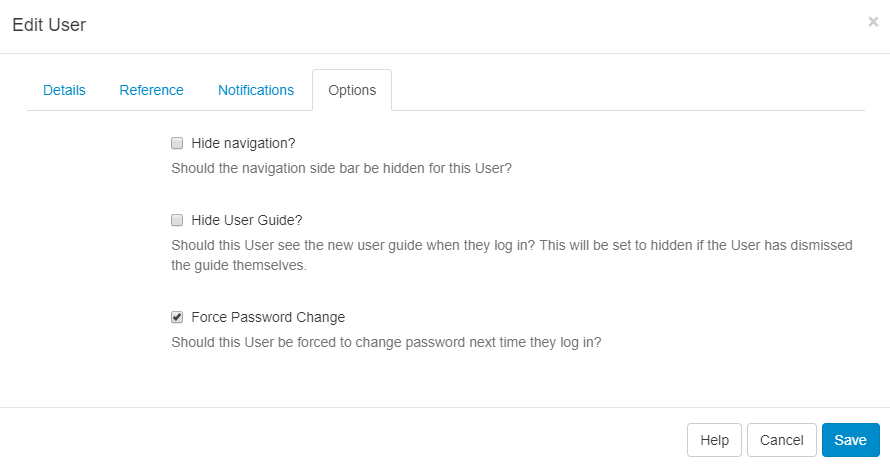
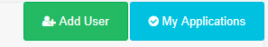

User Administration
Users are administered in the CMS by clicking on Users under the Administration section on the menu. The Users grid will open for you to manage and add Users.

Adding Users
Click on the Add User button and complete the form fields as required.

Details
Username - create a Username for the User, to be used for login and identifying the User.
Password - create a Password for the User, to be used for login.
Email - include an email address for the User (used for password reset / CMS notifications).
Homepage - select the first page or choice of Dashboard the User will see after login.
User Type - use the drop down to select from the three User Types available.
Library Quota - assign a quota to determine the maximum amount of content allowed to be uploaded to the Library.
Initial User Group - select which group the User should belong to.
Use System Notifications as the Initial User Group for Users that do not require permission to anything within the CMS but need notification emails when there are system issues (System Administrators).
Reference
Optionally complete information to be used as a reference to view and organise your Users.
Notifications
Choose if the User should receive Notifications by ticking the checkboxes.
Options
Select the options as necessary for the User.
SFC Technology doesn't place any limits on the number of Users that can be added.
Editing Users
Use the row menu for the User record you wish to make changes to and select Edit.

An Edit User form will open so that changes can be made as needed.

Force Password Change
Use to ensure that new Users change the password first given to them to access the system or if a User account password has been reset. Edit the User record and click on the Options tab. Tick the box Force Password Change, Save.

Users will be redirected to a page to reset their password, the next time they log in.
Deleting Users
Delete a User in the same way by using the row menu for the selected User. A confirmation form will open up and give you further options regarding the items currently owned by that User.
Deleting a User is irreversible and will remove all their owned items including; Media, Layouts and Schedules, even if these items are being used by other Users in the system. Reassign items to another User using the selector to make them the new owner of all the items currently owned by the User you wish to delete. Alternatively, use the Retired checkbox at the bottom of the Edit User form so that the items remain in use in the system with the User unable to log in.
My Applications
SFC Technology contains an API that allows 3rd party applications to connect and consume its data. Before using an application each User must authorise the application to act on their behalf within the CMS.
Once an application is authorised it can be viewed by clicking on the My Applications button to open a current list.

At the current time the CMS does not provide individual Users with a method of revoking access to an application, however, an admin can remove an application completely.